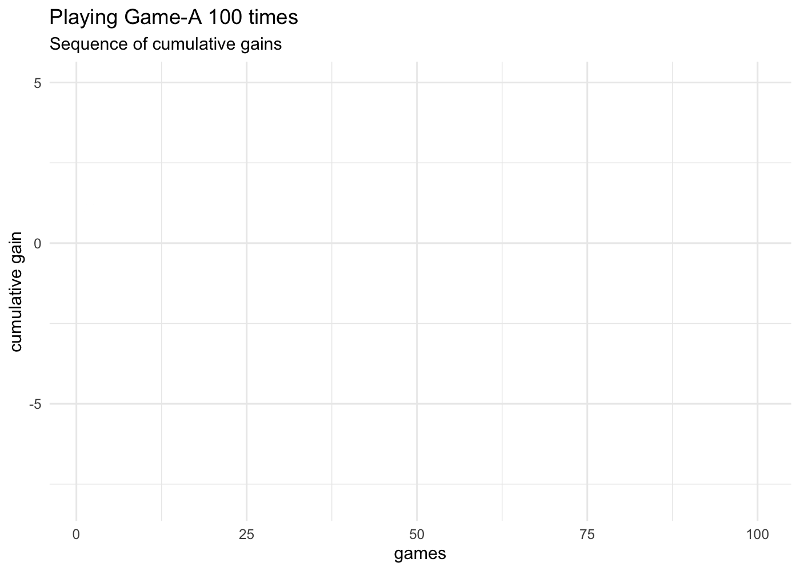

With all the coding elements that we have discussed so far, it’s time to play Game-A 100 times, and see what the proportion of wins turns out to be:
# random seed (for reproducibility purposes)set.seed(753)# main inputsdie =1:6number_games =100# initialize output matrixgames =matrix(0, nrow = number_games, ncol =4)# playing Game-A several timesfor (game in1:number_games) { games[game, ] =sample(die, size =4, replace =TRUE)}rownames(games) =paste0("game", 1:number_games)colnames(games) =paste0("roll", 1:4)# determine each game's win-or-lose outputwins =apply(X = games, MARGIN =1,FUN =function(x) any(x ==6))# total proportion of winsprop_wins =sum(wins) / number_gamesprop_wins
[1] 0.5
In this particular simulation of 100 games, we end up with a 0.5 proportion of wins. In other words, 50 percent of the games are wins, and the other 50 percent of the games are losses.
5.1 Computing Cumulative Gains
To make things more interesting, let’s assume that you are paid $1 if you win a game, but also that you pay $1 if you lose a game. That is:
gain 1 if you win a game
gain -1 if you lose a game
This means that we need to create another object to store this “gains” information. This can be done in different ways. One option is to initialize a vector gains of length number_games, and set its elements to -1. Then use the logical vector wins to do logical subsetting and switch to 1 the elements matching the TRUE values in wins, like this:
# vector of gainsgains =rep(-1, number_games) # initialize with all -1 elementsgains[wins] =1# switch to +1 for every win
The vector gains is a numeric vector containing as many 1’s as wins, and as many -1 as losses:
table(wins)
wins
FALSE TRUE
50 50
More interestingly, we can use cumsum() to obtain the cumulative addition of all elements in wins. The output vector, cumulative_gains, will contain the sequence of cumulative gains along the 100 games.
# cumulative gainscumulative_gains =cumsum(gains)head(cumulative_gains, n =10)
[1] 1 2 1 0 -1 -2 -1 -2 -3 -4
As you can tell from this output, the first game is a win, as well as the second one. But then, we get a decreasing sequence with the next four elements in cumulative_gains: 1 0 -1 -2, indicating that games 3 to 6 are consecutive losses.
5.2 Plotting Cumulative Gains
It would be nice to visualize the sequence of wins and losses using the vector of cumulative gains cumulative_gains. So let’s see how to get some plots using base "graphics" functions, as well as "ggplot2" functions.
5.2.1 Cumulative Gains with plot()
Using traditional "graphics" functions, we can create a line graph with plot(). In the x-axis we pass a sequence vector of games; as for the y-axis we pass the cumulative_gains vector.
plot(1:number_games, cumulative_gains, type ='l',xlab ="games", ylab ="cumulative gain", las =1,lwd =1.5, col ="#318BEC")abline(h =0, col ="gray70", lty =2)
Observe where the blue line ends at game 100: exactly at a y-axis value of zero. Basically, in this series of 100 games, you didn’t gain any money, but you didn’t lose either.
5.2.2 Cumulative Gains with ggplot2
What if you prefer to make a graphic with "ggplot2" functions instead of using the traditional base plot() approach? No problem, this is also possible.
We are assuming that you have loaded the package "tidyverse" which contains "ggplot2".
library(tidyverse) # which contains ggplot2
To make graphics with ggplot(), we first need to assemble the data to be plotted into a data frame. One way to create this table is as follows:
Having the appropriate data in a data frame object tbl, we can now proceed to make a line graph with the number game in the x-axis, and the cumulative gain in the y-axis.
ggplot(data = tbl, aes(x = game, y = cumulative_gain)) +geom_hline(yintercept =0, color ="gray70") +geom_line(color ="#318BEC", linewidth =1) +labs(x ="games", y ="cumulative gain", title ="Playing Game-A 100 times",subtitle ="Sequence of cumulative gains") +theme_minimal()
5.2.3 Animated ggplot graphic
For your amusement, it is also possible to make an animated ggplot graphic. This requires the companion package "gganimate"
library(gganimate)# gganimate may also need:# library(gifski) # for gif output# library(av) # for video output
For convenience purposes, it’s better if we assign the graphic to an object, e.g. static_plot, and then we add a transition layer with one of the transition_() functions. In this example we are going to use the transition_reveal() function, specifying game as the variable in the data tbl that needs to be taken into account to create the frames of the animation.
# ggplot objectstatic_plot =ggplot(data = tbl, aes(x = game, y = cumulative_gain)) +geom_hline(yintercept =0, color ="gray70") +geom_line(color ="#318BEC", linewidth =1) +labs(x ="games", y ="cumulative gain", title ="Playing Game-A 100 times",subtitle ="Sequence of cumulative gains") +theme_minimal()# animationanimated_plot = static_plot +transition_reveal(game)animate(animated_plot)

Figure 5.1: Game-A 100 times
To save the animated plot into a gif file, you use anim_save(), for example:
# save gif in working directoryanim_save(filename ="Playing-Game-A-100-times.gif", animation = animated_plot,height =5, width =7, units ="in",res =200)